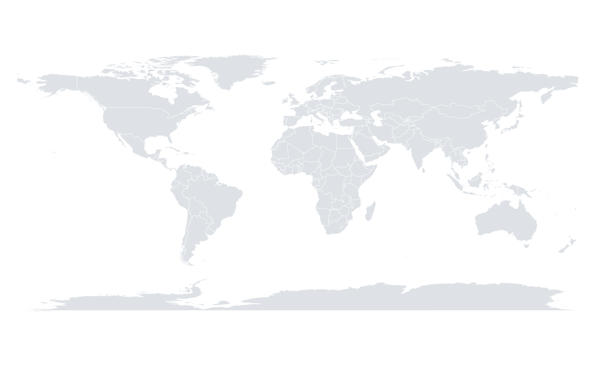

A simplified set of world country outlines, suitable for thematic world maps at typical figure sizes. Polygon rings were simplified with the Douglas-Peucker algorithm to keep the dataset small while preserving the recognisable shape of coastlines and borders.
Format
A data frame with four columns:
- long
Longitude in degrees, from -180 to 180.
- lat
Latitude in degrees, from -90 to 90.
- group
Integer identifying the polygon ring a point belongs to. Points must be drawn ring by ring; a country made of several land masses has several rings.
- region
Country or territory name.
Source
Derived from the world database of the maps package, whose boundaries come from Natural Earth (https://www.naturalearthdata.com), released into the public domain.
Details
Coordinates are unprojected longitude and latitude in degrees; use
orb_coord_map() to choose a projection.
References
Douglas, D. H. & Peucker, T. K. (1973) "Algorithms for the reduction of the number of points required to represent a digitized line or its caricature." Cartographica 10, 112-122. doi:10.3138/FM57-6770-U75U-7727
Examples
str(world_map)
#> 'data.frame': 26953 obs. of 4 variables:
#> $ long : num -69.9 -70.1 -70 -69.9 74.9 ...
#> $ lat : num 12.5 12.5 12.6 12.5 37.2 ...
#> $ group : int 1 1 1 1 2 2 2 2 2 2 ...
#> $ region: chr "Aruba" "Aruba" "Aruba" "Aruba" ...
length(unique(world_map$region))
#> [1] 229
orb_worldmap()
#> <orb_spec>
#> data: 26953 rows x 4 columns
#> mapping:
#> layers: map
